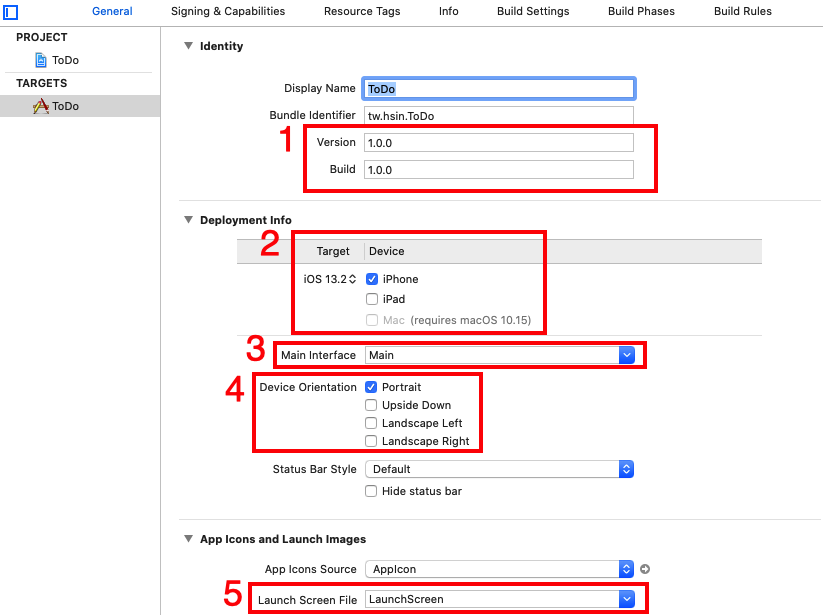

程式之外的設定
除了編寫 Swift 程式，要上架應用程式前，還需要設置一些程式之外的設定，以下會依序介紹。
基本設定
專案建立完成後，先看到TARGETS > ToDo > General，設定如下圖的部分：

- 將 Version 與 Build 版本都設定為初版 1.0.0 ，版本數字沒有特別規定，主要限制是每次更新上架的 Version 都必須比前一版更高，而 Build 指的是開發的版本，每次 Archive (打包送審)到 App Store 審核的 Build 都必須不同，如果因為一些原因被拒絕，修正後則需要設定更高的 Build 版本才能再送審。所以一個 Version 可能會因為一些原因，會有多個 Build 版本，兩者數字為獨立各別使用。
- 選擇你所屬的 Team ，如果沒有的話請依據他的提示註冊一個 Apple ID 。(不需要一定是開發者帳號。)
- 支援的 iOS 作業系統版本，這邊設置為支援 iOS 9.0 以上的裝置。
- 因為要以純程式碼來編寫應用程式，所以將 Storyboard 刪掉。
- 可以支援的 iPhone 畫面方向，這邊以較單純的方式進行，只留 Portrait ，也就是原本直立的方向。
- 應用程式啟動時的畫面，原本也可以使用一個 Storyboard 來呈現，這邊簡化成使用圖片，所以這欄位也是將 Storyboard 刪掉。
Hint
- 更多內容請參考介面簡介。
接著看到PROJECT > ToDo > Info，設定如下圖的 iOS 作業系統版本支援部分：
Launch Images
預設是沒有應用程式啟動時的圖片檔案，所以必須手動加入，先點選 Assets.xcassets 檔案，並在空白處點右鍵，選擇App Icons & Launch Images > New iOS Launch Image，如下圖：
接著便會建立為如下圖的格式，依序點擊後可看到右側欄的設定，請依照應用程式實際支援的版本及類型，事先設計好要使用的各尺寸圖片。以下為各型號 iPhone 需要的 Launch Image 尺寸：
- 640x960 ： iPhone 4S。
- 640 x 1136 ： iPhone 5、 iPhone 5s 、 iPhone SE。
- 750 x 1334 ： iPhone 6、 iPhone 6s、 iPhone 7、 iPhone 8。
- 1242 x 2208 ： iPhone 6 Plus、 iPhone 6s Plus、 iPhone 7 Plus、 iPhone 8 Plus。
- 1125 x 2436 ： iPhone X。
直接將 Finder 的圖片檔案拖曳進 Xcode 的列表中，如下：
接著回到TARGETS > ToDo > General，點選Use Asset Catalog來將前面設定的啟動圖檔與專案做連結，如下：
會有一個確認提示，請選擇預設存在的 Assets 即可，如下：
選擇後， Launch Images Source 可能會出現一個 Brand Assets ，先別緊張，點擊他後選擇稍前設定好的 LaunchImage 即可，如下：
接著再切換到 Assets.xcassets 檔案，將 Brand Assets 刪除，如下圖：
Icons
在 Assets.xcassets 檔案中，可以看到另一個 AppIcon 列表，是用來設置應用程式的圖示，依序點擊後可看到右側欄的設定，請依照應用程式實際支援的版本及裝置，事先設計好要使用的各尺寸圖片：
直接將 Finder 的圖片檔案拖曳進 Xcode 的列表中，如下：
刪除 Storyboard
因為 Storyboard 檔案都已經不需要了，所以以刪除檔案的方式將 Main.storyboard 與 LaunchScreen.storyboard 兩個檔案刪除。
應用程式名稱
先開啟 Info.plist 檔案，看到 Bundle name 這個欄位，代表應用程式的名稱，預設是顯示專案名稱$(PRODUCT_NAME)，如下：
這邊將其改為欲設置的名稱，如下：
這樣在 iPhone 的應用程式列表中，便會顯示上面設置的名稱，而不是專案名稱：